Candidate List 20260326 Previous Day Next Day Section 1: New Sources (age<1d) Cosmological Afterglow
Section 2: Old (1-5d) sources observed last night placeholder
Section 1: New Afterglow/FBOT Cands Last Night (2)
1. ZTF26aapvsom (Afterglow?) [Back to Top] [Share] [Trigger Swift] [Fritz ] [Lasair ]RA, Dec: 125.56714, 37.89769 8h22m16.11s, 37d53m51.67sGalactic (l, b): 183.67537, 33.44917 ext(g-r) = 0.044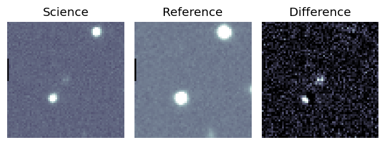
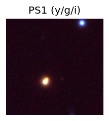
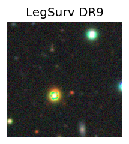
LegacySurvey: 1 sources in 3 arcsec Closest: d = 9.03 arcsec, 207.9 deg (east of north) photoz=0.76 (68% bounds 0.52, 0.83), type=PSF peak abs mag = -24.39 (68% bounds -23.39, -24.63) 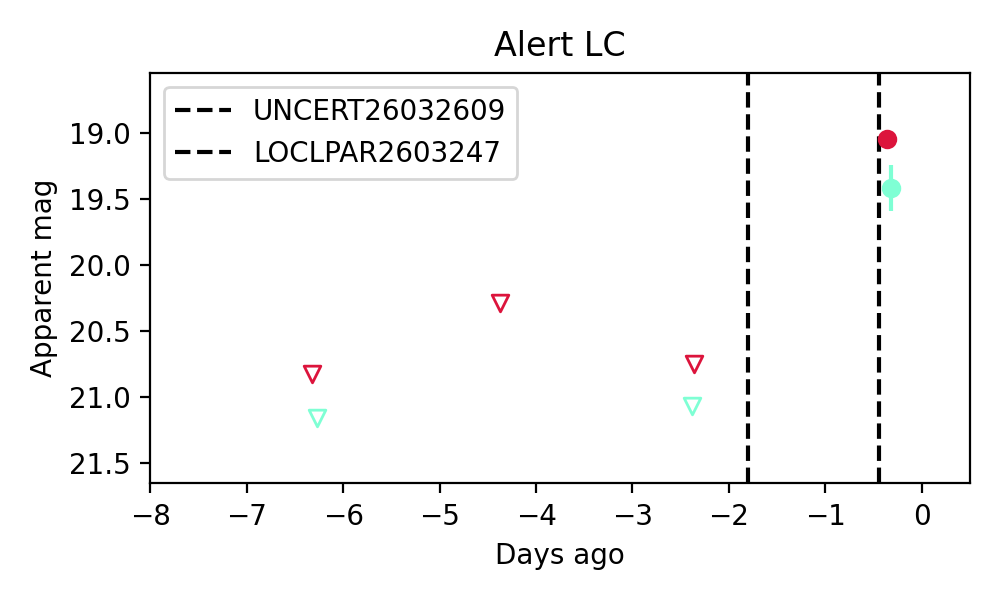
Consistent with synchrotron, g-r>0!
2. ZTF26aapzerr (Afterglow?) [Back to Top] [Share] [Trigger Swift] [Fritz ] [Lasair ]RA, Dec: 194.88744, 10.02529 12h59m32.99s, 10d 1m31.05sGalactic (l, b): 309.69585, 72.79042 ext(g-r) = 0.022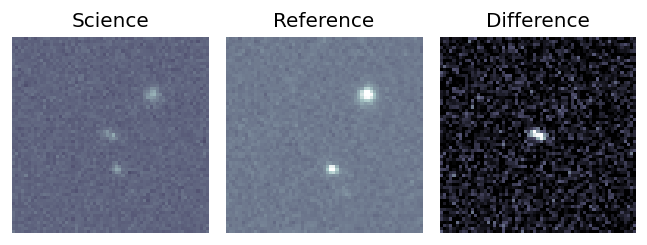
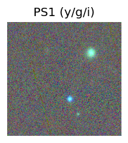
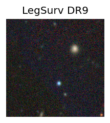
LegacySurvey: 1 sources in 3 arcsec Closest: d = 5.71 arcsec, 219.1 deg (east of north) photoz=0.92 (68% bounds 0.75, 1.16), type=PSF peak abs mag = -24.31 (68% bounds -23.79, -24.95) 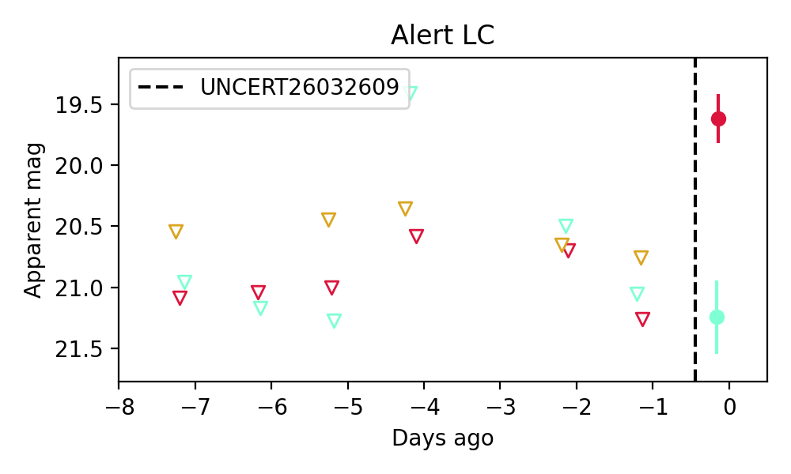
Consistent with synchrotron, g-r>0!
Section 2: Older Sources Observed Last Night (23)
0. ZTF26aanqytv (Afterglow?) [Back to Top] [Share] [Trigger Swift] [Fritz ] [Lasair ]RA, Dec: 183.92993, 36.32041 12h15m43.18s, 36d19m13.47sGalactic (l, b): 160.22691, 78.08837 ext(g-r) = 0.023LegacySurvey: 1 sources in 3 arcsec Closest: d = 6.87 arcsec, 46.7 deg (east of north) photoz=0.0 (68% bounds 0.0, 0.04), type=PSF peak abs mag = -11.52 (68% bounds -10.76, -17.02) Consistent with synchrotron, g-r>0!
1. ZTF26aanrcbg (FBOT?) [Back to Top] [Share] [Trigger Swift] [Fritz ] [Lasair ]RA, Dec: 189.95274, 8.34121 12h39m48.66s, 8d20m28.37sGalactic (l, b): 294.06101, 71.01243 ext(g-r) = 0.027peak abs mag = -20.09 LegacySurvey: 1 sources in 3 arcsec Closest: d = 0.18 arcsec, 285.0 deg (east of north) photoz=0.13 (68% bounds 0.11, 0.16), type=SER peak abs mag = -19.33 (68% bounds -18.96, -19.76) Consistent with synchrotron, g-r>0!
2. ZTF26aansykv (Afterglow?) [Back to Top] [Share] [Trigger Swift] [Fritz ] [Lasair ]RA, Dec: 233.95323, 37.94259 15h35m48.78s, 37d56m33.31sGalactic (l, b): 60.98392, 54.02998 ext(g-r) = 0.016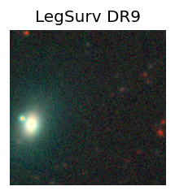
LegacySurvey: 1 sources in 3 arcsec Closest: d = 2.85 arcsec, 353.5 deg (east of north) photoz=0.71 (68% bounds 0.37, 1.05), type=REX peak abs mag = -23.4 (68% bounds -21.71, -24.46) Consistent with synchrotron, g-r>0!
3. ZTF26aansyzk (FBOT?) [Back to Top] [Share] [Trigger Swift] [Fritz ] [Lasair ]RA, Dec: 243.26596, 23.02499 16h13m3.83s, 23d 1m29.97sGalactic (l, b): 39.41896, 44.45783 ext(g-r) = 0.084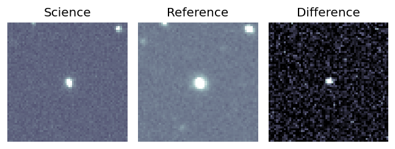
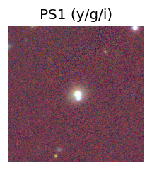
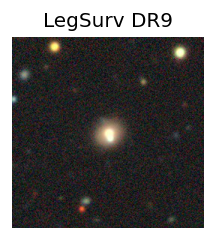
peak abs mag = -19.89 LegacySurvey: 1 sources in 3 arcsec Closest: d = 0.62 arcsec, 223.3 deg (east of north) photoz=0.07 (68% bounds 0.07, 0.08), type=SER peak abs mag = -19.41 (68% bounds -19.19, -19.63) 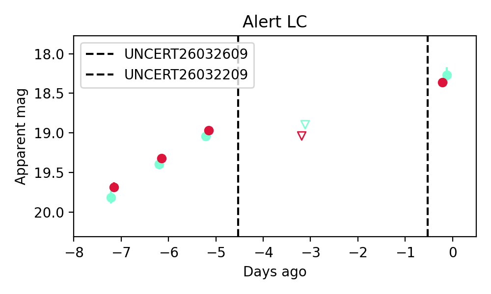
4. ZTF26aaocyjb (Afterglow?) [Back to Top] [Share] [Trigger Swift] [Fritz ] [Lasair ]RA, Dec: 188.03834, 48.52223 12h32m9.20s, 48d31m20.04sGalactic (l, b): 131.58344, 68.28079 ext(g-r) = 0.016peak abs mag = -23.80 LegacySurvey: 1 sources in 3 arcsec Closest: d = 0.70 arcsec, 82.3 deg (east of north) photoz=0.05 (68% bounds 0.01, 0.27), type=EXP peak abs mag = -18.03 (68% bounds -15.0, -22.11)
5. ZTF26aaodgsa (FBOT?) [Back to Top] [Share] [Trigger Swift] [Fritz ] [Lasair ]RA, Dec: 172.04538, 25.6567 11h28m10.89s, 25d39m24.12sGalactic (l, b): 212.72735, 71.31866 ext(g-r) = 0.023LegacySurvey: 1 sources in 3 arcsec Closest: d = 0.81 arcsec, 310.8 deg (east of north) photoz=0.07 (68% bounds 0.03, 0.08), type=REX peak abs mag = -20.28 (68% bounds -18.82, -20.61) Consistent with synchrotron, g-r>0!
6. ZTF26aaonmha (Afterglow?) [Back to Top] [Share] [Trigger Swift] [Fritz ] [Lasair ]RA, Dec: 149.9287, 0.41845 9h59m42.89s, 0d25m6.40sGalactic (l, b): 238.60206, 40.91523 ext(g-r) = 0.026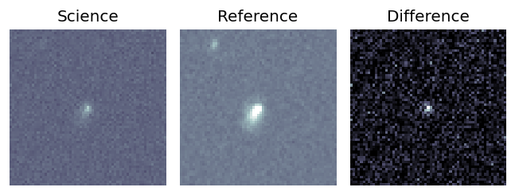
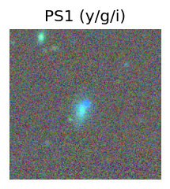
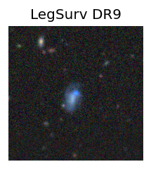
LegacySurvey: 1 sources in 3 arcsec Closest: d = 0.08 arcsec, 226.1 deg (east of north) photoz=0.04 (68% bounds 0.01, 0.08), type=SER peak abs mag = -18.91 (68% bounds -16.2, -20.23) 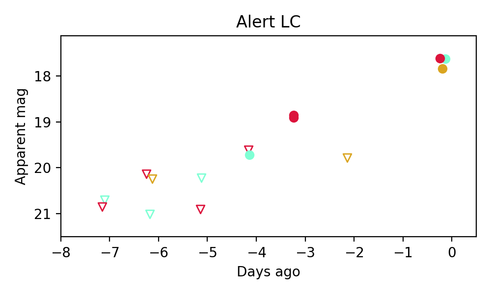
Consistent with synchrotron, g-r>0!
7. ZTF26aaotmuq (Afterglow?) [Back to Top] [Share] [Trigger Swift] [Fritz ] [Lasair ]RA, Dec: 162.37447, 21.77828 10h49m29.87s, 21d46m41.79sGalactic (l, b): 217.14499, 61.81105 ext(g-r) = 0.023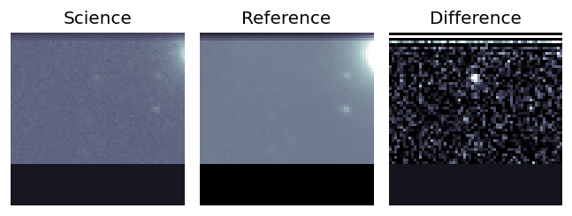
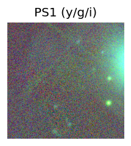
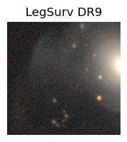
LegacySurvey: 1 sources in 3 arcsec Closest: d = 6.69 arcsec, 350.4 deg (east of north) photoz=0.34 (68% bounds 0.21, 0.66), type=REX peak abs mag = -22.53 (68% bounds -21.28, -24.22) 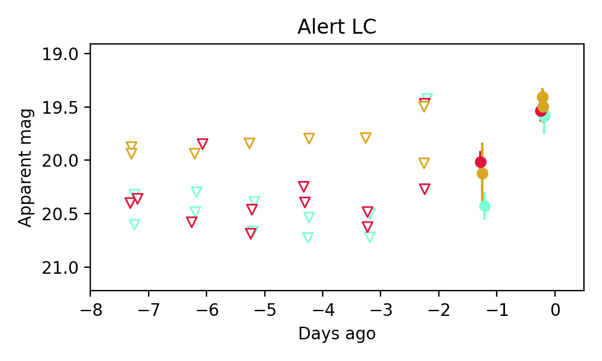
Consistent with synchrotron, g-r>0!
8. ZTF26aaovklu (FBOT?) [Back to Top] [Share] [Trigger Swift] [Fritz ] [Lasair ]RA, Dec: 186.0036, 15.14488 12h24m0.86s, 15d 8m41.57sGalactic (l, b): 273.53035, 76.42539 ext(g-r) = 0.024LegacySurvey: 1 sources in 3 arcsec Closest: d = 0.11 arcsec, 180.7 deg (east of north) photoz=0.36 (68% bounds 0.23, 0.54), type=EXP peak abs mag = -21.25 (68% bounds -20.18, -22.28) Consistent with synchrotron, g-r>0!
9. ZTF26aaovlst (FBOT?) [Back to Top] [Share] [Trigger Swift] [Fritz ] [Lasair ]RA, Dec: 186.60897, 8.3937 12h26m26.15s, 8d23m37.31sGalactic (l, b): 284.24769, 70.35314 ext(g-r) = 0.023peak abs mag = -23.05 LegacySurvey: 1 sources in 3 arcsec Closest: d = 0.12 arcsec, 167.5 deg (east of north) photoz=0.08 (68% bounds 0.03, 0.19), type=DEV peak abs mag = -18.13 (68% bounds -15.94, -20.27)
10. ZTF26aaozeuv (Afterglow?) [Back to Top] [Share] [Trigger Swift] [Fritz ] [Lasair ]RA, Dec: 51.95097, 40.03432 3h27m48.23s, 40d 2m3.56sGalactic (l, b): 152.71882, -13.62542 ext(g-r) = 0.167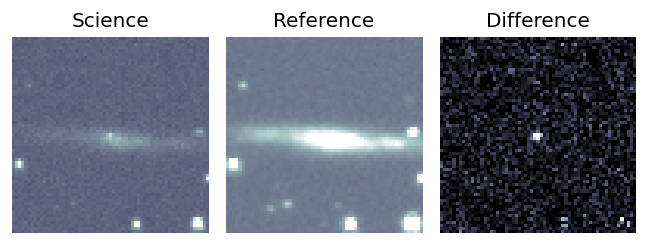
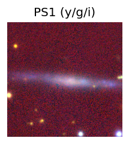
PS1: 1 source in 3 arcsec Closest: d = 3.07 arcsec photoz=0.02+/-0.00 peak abs mag = -16.09 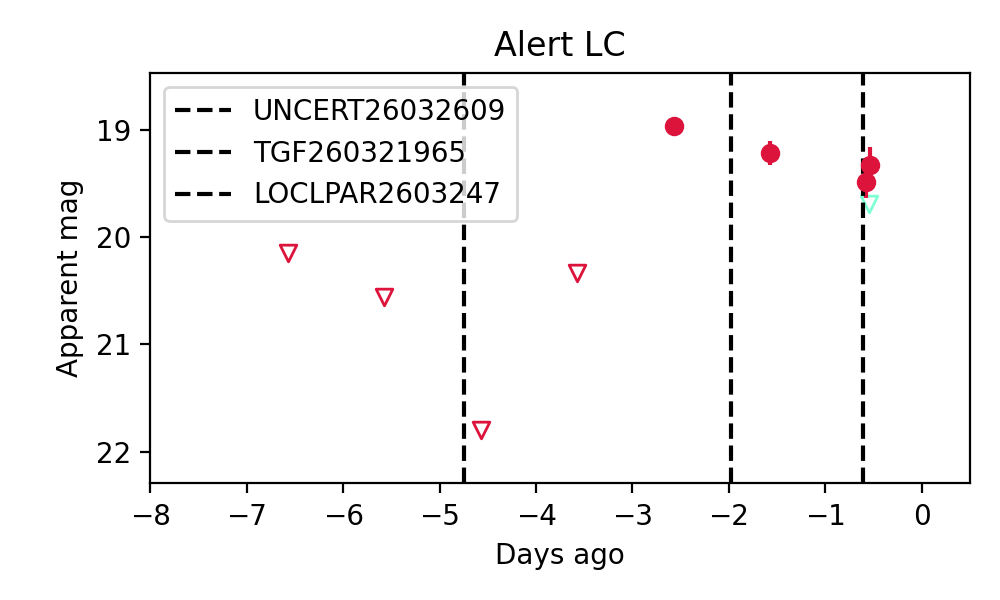
11. ZTF26aaozouc (FBOT?) [Back to Top] [Share] [Trigger Swift] [Fritz ] [Lasair ]RA, Dec: 137.90126, 23.14853 9h11m36.30s, 23d 8m54.72sGalactic (l, b): 204.68337, 40.47532 ext(g-r) = 0.059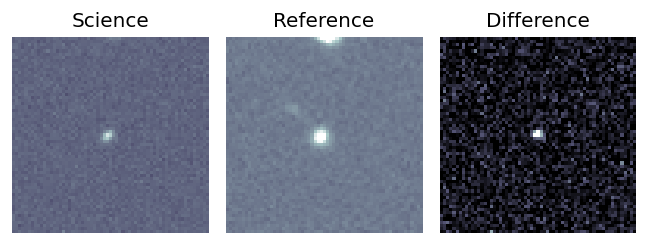
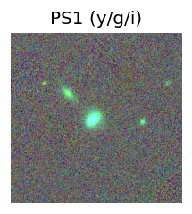
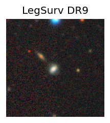
peak abs mag = -20.03 LegacySurvey: 1 sources in 3 arcsec Closest: d = 1.52 arcsec, 128.7 deg (east of north) photoz=0.12 (68% bounds 0.1, 0.14), type=SER peak abs mag = -18.91 (68% bounds -18.54, -19.26) 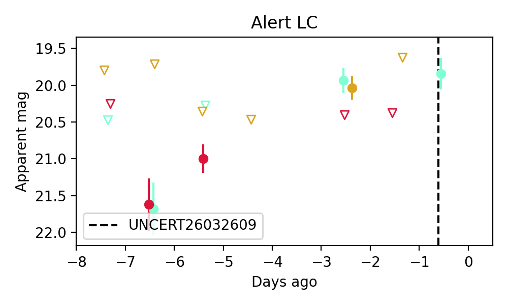
Consistent with synchrotron, g-r>0!
12. ZTF26aapgqen (Afterglow?FBOT?) [Back to Top] [Share] [Trigger Swift] [Fritz ] [Lasair ]RA, Dec: 198.96231, 19.72382 13h15m50.96s, 19d43m25.74sGalactic (l, b): 341.29321, 80.72043 ext(g-r) = 0.022peak abs mag = -17.64 LegacySurvey: 1 sources in 3 arcsec Closest: d = 1.34 arcsec, 281.5 deg (east of north) photoz=0.34 (68% bounds 0.07, 1.21), type=PSF peak abs mag = -21.89 (68% bounds -18.0, -25.23) Consistent with synchrotron, g-r>0!
13. ZTF26aapgvkd (FBOT?) [Back to Top] [Share] [Trigger Swift] [Fritz ] [Lasair ]RA, Dec: 231.2836, 13.34003 15h25m8.06s, 13d20m24.10sGalactic (l, b): 19.69478, 51.59515 ext(g-r) = 0.051peak abs mag = -24.83 LegacySurvey: 1 sources in 3 arcsec Closest: d = 0.19 arcsec, 50.2 deg (east of north) photoz=0.12 (68% bounds 0.07, 0.39), type=EXP peak abs mag = -21.33 (68% bounds -20.22, -24.2)
14. ZTF26aapoypz (Afterglow?) [Back to Top] [Share] [Trigger Swift] [Fritz ] [Lasair ]RA, Dec: 200.06133, -3.9939 13h20m14.72s, -3d-59m-38.03sGalactic (l, b): 316.62536, 58.1099 WARNING: 4.14 deg from ecliptic plane ext(g-r) = 0.042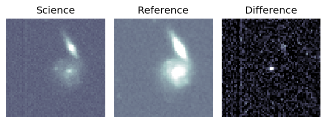
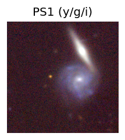
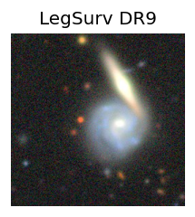
LegacySurvey: 1 sources in 3 arcsec Closest: d = 5.31 arcsec, 323.8 deg (east of north) photoz=0.03 (68% bounds 0.02, 0.05), type=PSF peak abs mag = -16.17 (68% bounds -15.33, -17.43) 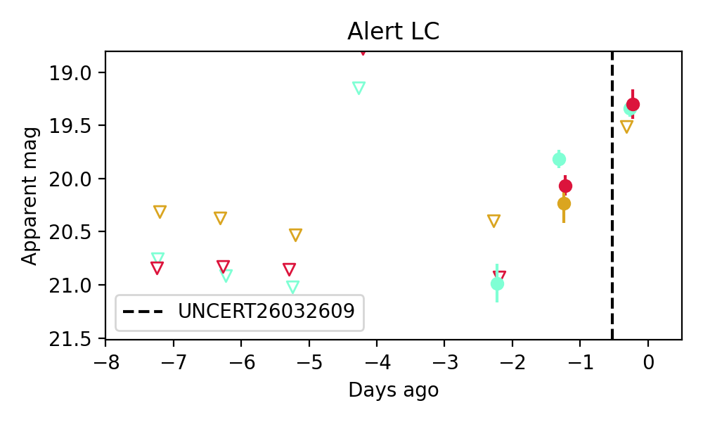
Consistent with synchrotron, g-r>0!
15. ZTF26aapviim (FBOT?) [Back to Top] [Share] [Trigger Swift] [Fritz ] [Lasair ]RA, Dec: 131.05158, 82.01976 8h44m12.38s, 82d 1m11.13sGalactic (l, b): 131.10979, 30.65988 ext(g-r) = 0.039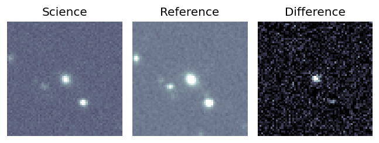
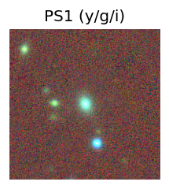
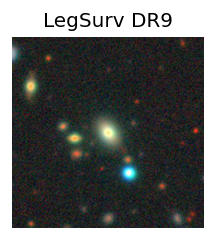
peak abs mag = -20.31 LegacySurvey: 1 sources in 3 arcsec Closest: d = 0.27 arcsec, 199.0 deg (east of north) photoz=0.08 (68% bounds 0.07, 0.09), type=SER peak abs mag = -19.52 (68% bounds -19.28, -19.8) 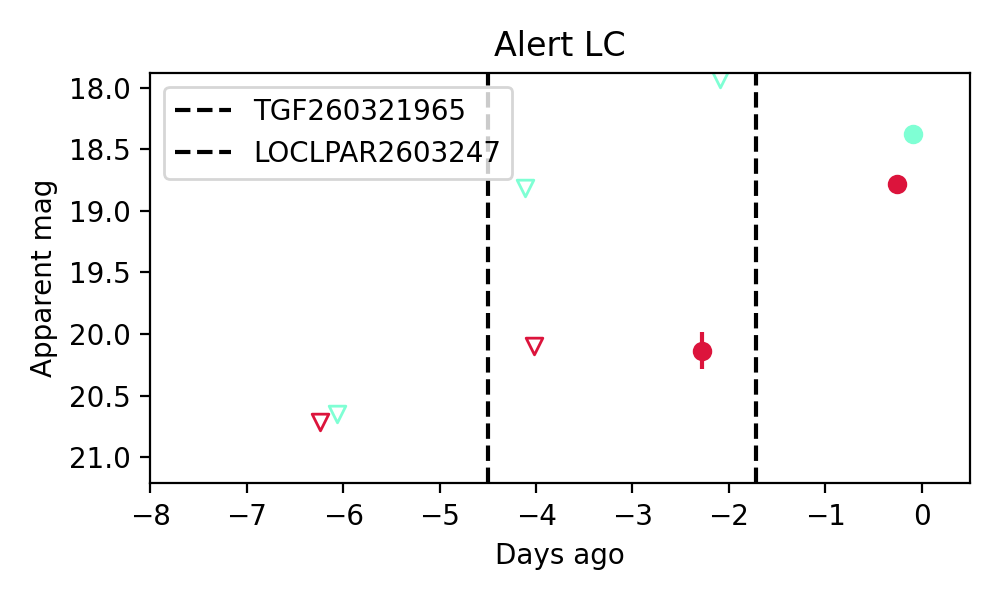
16. ZTF26aapwagx (FBOT?) [Back to Top] [Share] [Trigger Swift] [Fritz ] [Lasair ]RA, Dec: 160.73444, 37.86962 10h42m56.27s, 37d52m10.64sGalactic (l, b): 183.02134, 61.03414 ext(g-r) = 0.015peak abs mag = -21.93 LegacySurvey: 1 sources in 3 arcsec Closest: d = 0.83 arcsec, 189.3 deg (east of north) photoz=0.22 (68% bounds 0.17, 0.28), type=REX peak abs mag = -20.2 (68% bounds -19.62, -20.8) Consistent with synchrotron, g-r>0!
17. ZTF26aapwjqd (FBOT?) [Back to Top] [Share] [Trigger Swift] [Fritz ] [Lasair ]RA, Dec: 166.35009, -16.85616 11h 5m24.02s, -16d-51m-22.17sGalactic (l, b): 269.56227, 39.04841 ext(g-r) = 0.049peak abs mag = -23.09 PS1: 1 source in 3 arcsec Closest: d = 0.28 arcsec photoz=0.84+/-0.11 peak abs mag = -24.00
18. ZTF26aapxmjn (Afterglow?) [Back to Top] [Share] [Trigger Swift] [Fritz ] [Lasair ]RA, Dec: 189.3524, -1.54589 12h37m24.58s, -1d-32m-45.20sGalactic (l, b): 295.65646, 61.12754 WARNING: 2.28 deg from ecliptic plane ext(g-r) = 0.029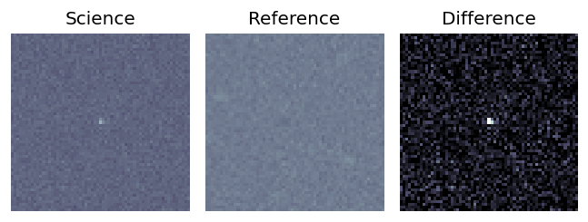
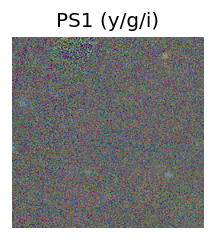
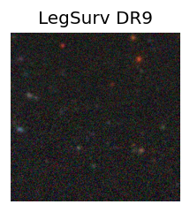
LegacySurvey: 1 sources in 3 arcsec Closest: d = 5.91 arcsec, 244.4 deg (east of north) photoz=0.69 (68% bounds 0.41, 1.08), type=PSF peak abs mag = -24.45 (68% bounds -23.13, -25.66) 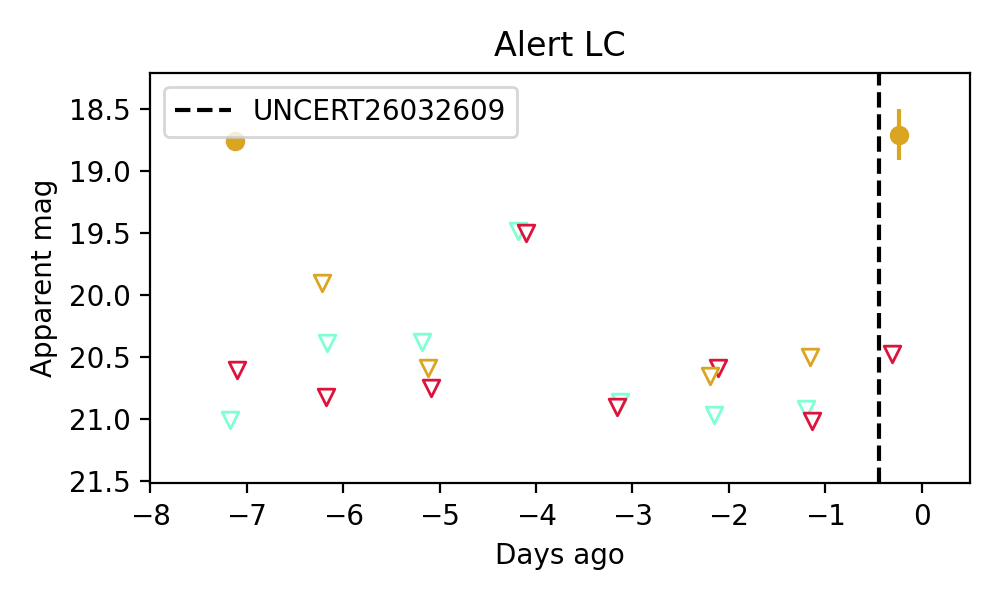
19. ZTF26aapxueh (Afterglow?) [Back to Top] [Share] [Trigger Swift] [Fritz ] [Lasair ]RA, Dec: 141.93821, 6.66899 9h27m45.17s, 6d40m8.36sGalactic (l, b): 226.22357, 37.60369 ext(g-r) = 0.056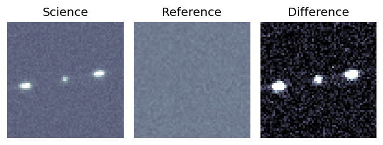
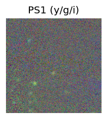
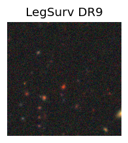
LegacySurvey: 1 sources in 3 arcsec Closest: d = 5.04 arcsec, 174.4 deg (east of north) photoz=0.86 (68% bounds 0.82, 0.9), type=EXP peak abs mag = -26.12 (68% bounds -26.0, -26.26) 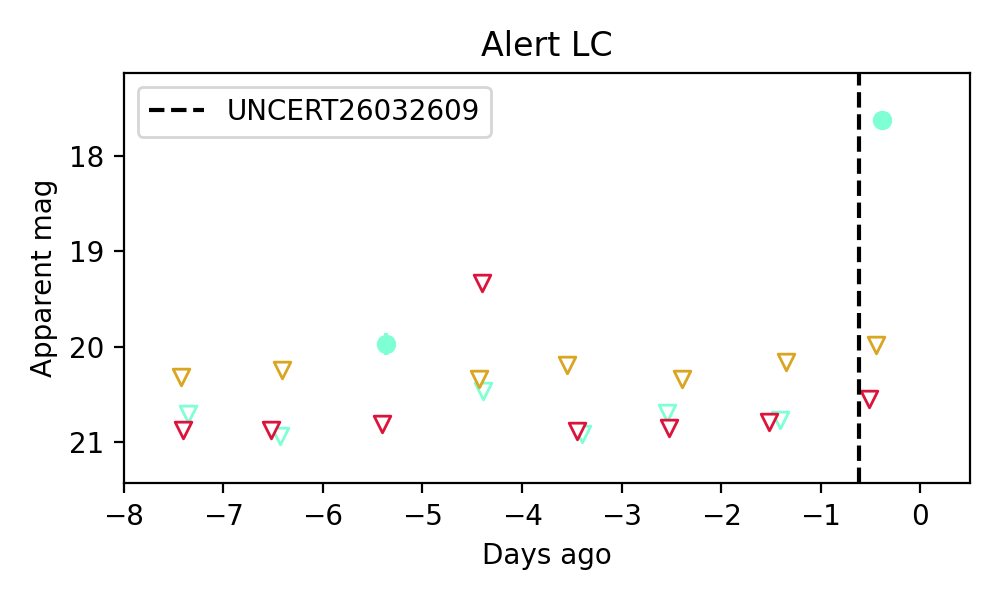
20. ZTF26aapxuzk (Afterglow?) [Back to Top] [Share] [Trigger Swift] [Fritz ] [Lasair ]RA, Dec: 172.10601, 78.51488 11h28m25.44s, 78d30m53.56sGalactic (l, b): 128.05314, 37.7751 ext(g-r) = 0.03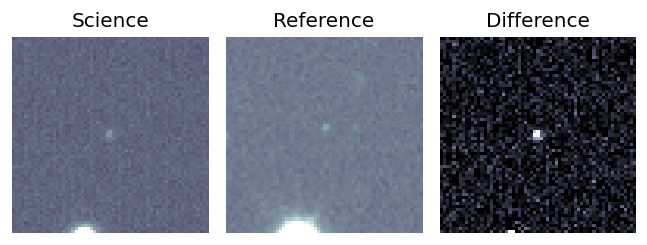
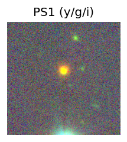
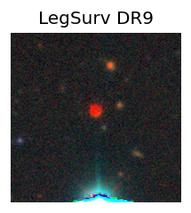
LegacySurvey: 1 sources in 3 arcsec Closest: d = 3.21 arcsec, 2.7 deg (east of north) photoz=0.07 (68% bounds 0.02, 0.18), type=PSF peak abs mag = -18.57 (68% bounds -15.81, -20.75) 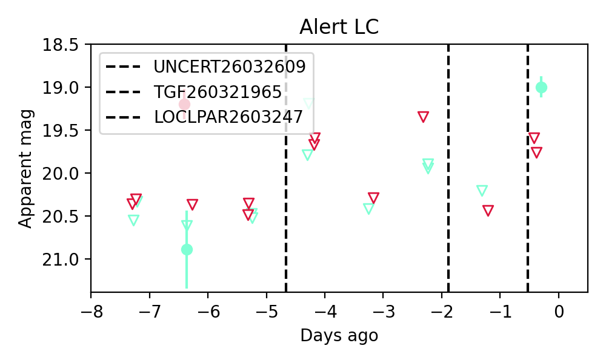
21. ZTF26aapyksn (FBOT?) [Back to Top] [Share] [Trigger Swift] [Fritz ] [Lasair ]RA, Dec: 188.22748, 8.79902 12h32m54.59s, 8d47m56.46sGalactic (l, b): 288.62828, 71.15442 ext(g-r) = 0.019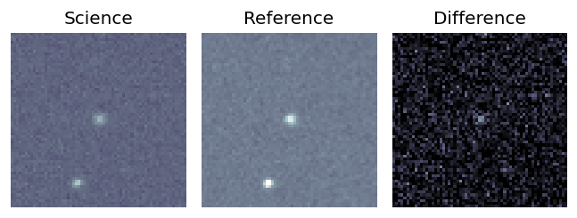
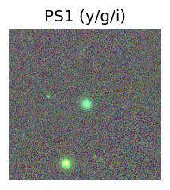
peak abs mag = -19.80 LegacySurvey: 1 sources in 3 arcsec Closest: d = 0.14 arcsec, 259.8 deg (east of north) photoz=0.33 (68% bounds 0.31, 0.37), type=REX peak abs mag = -19.84 (68% bounds -19.63, -20.09)
22. ZTF26aapyqjm (Afterglow?) [Back to Top] [Share] [Trigger Swift] [Fritz ] [Lasair ]RA, Dec: 193.77883, 5.88999 12h55m6.92s, 5d53m23.95sGalactic (l, b): 305.45512, 68.74372 ext(g-r) = 0.035peak abs mag = -17.47 LegacySurvey: 1 sources in 3 arcsec Closest: d = 1.34 arcsec, 121.7 deg (east of north) photoz=0.06 (68% bounds 0.04, 0.11), type=SER peak abs mag = -17.11 (68% bounds -16.21, -18.74) Consistent with synchrotron, g-r>0!